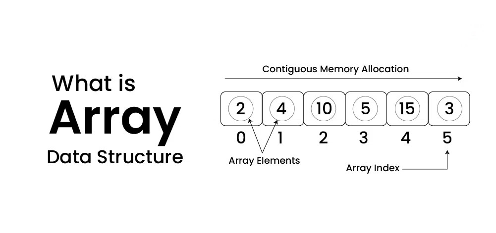
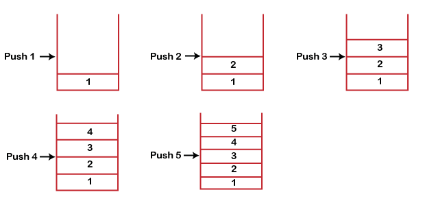
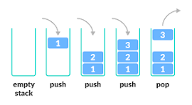

Welcome to Structify
Learn data structures and test your knowledge with engaging quizzes!
Get StartedLearn Data Structures In C++
Introduction To Array
An array is a linear data structure that stores a collection of elements, typically of the same data type, in a contiguous block of memory. Each element in an array can be accessed using its index, which is the position of the element within the array. Here are some key points about arrays:
- Fixed Size: The size of an array is defined when it's created and cannot be changed. This means the number of elements it can hold is fixed.
- Indexing: Array elements are accessed using an index, with the first element at index 0. This allows for quick access to any element by its index.
- Memory Allocation: Arrays allocate a contiguous block of memory, which enables efficient element access but limits flexibility compared to other data structures.
- Data Type: Arrays are generally homogeneous, meaning all elements are of the same data type (like integers, floats, strings, etc.).
- Operations: Common operations on arrays include accessing, updating, and iterating over elements. Searching and sorting can also be performed, though they may require additional algorithms
- Advantages:
- Fast Access: Constant-time access to elements using their index.
- Memory Efficiency: Arrays use a contiguous memory block, which is generally efficient for storing a large number of elements.
- Disadvantages:
- Fixed Size: Arrays have a fixed size, making it hard to add or remove elements dynamically
- Insertion/Deletion: Inserting or deleting elements (other than at the end) requires shifting elements, which can be inefficient
Introduction to Linkedlist
A Linked List is a linear data structure consisting of nodes where each node contains a data element and a pointer (or reference) to the next node in the sequence. Unlike arrays, linked lists are dynamic and can grow or shrink in size during runtime by allocating and deallocating memory. Linked lists are often used when the size of the data structure is unknown or frequently changing.

Types of Linkedlist
- Singly Linked List :
- Each node points to the next node in the sequence.
- The last node points to NULL, indicating the end of the list.
- Allows traversal in only one direction (from head to tail).
- Doubly Linked List :
- Each node contains two pointers: one to the next node and one to the previous node.
- This allows traversal in both directions (forward and backward)
- Takes more memory per node but provides greater flexibility in navigating and modifying the list
- Circular Linked List :
- The last node points back to the first node, forming a circular structure
- Can be either singly or doubly linked
- Useful in applications that require a cyclic iteration through elements (e.g., round-robin scheduling)
Introduction to Stack
A stack is a linear data structure that follows the Last In, First Out (LIFO) principle. It means that the element added last is removed first.
 Key Characteristics of a Stack
- LIFO Order: The last item inserted is the first to be removed
- Operations:
- Push: Adds an element to the top of the stack.
- Pop: Removes and returns the top element of the stack
- Peek/Top: Retrieves the top element without removing it
- isEmpty: Checks if the stack is empty
- Storage: Can be implemented using arrays or linked lists.
Introduction To Queue

A queue is a linear data structure that follows the First In, First Out (FIFO) principle. It means the element added first is removed first.
Key Characteristics of a Queue
- FIFO Order: The element inserted first will be removed first

- Operations:
- Enqueue: Adds an element to the rear of the queue.
- Dequeue: Removes and returns the element from the front of the queue.
- Front/Peek: Retrieves the front element without removing it.
- isEmpty: Checks if the queue is empty.
- isFull(in array-based queues): Checks if the queue has reached its capacity.
- Storage: Can be implemented using arrays or linked lists.
Types of Queues
- Simple Queue: Follows basic FIFO rules.
- Circular Queue: The last position connects back to the first, utilizing memory efficiently.
- Priority Queue: Elements are dequeued based on priority rather than order
- Deque (Double-Ended Queue): Allows insertion and deletion from both ends.
Time Complexity
| Data Structure | Insertion | Deletion | Traversal |
|---|---|---|---|
| Array | O(1) | O(n) | O(n) |
| Linked List | O(1) | O(1) | O(n) |
| Stack | O(1) | O(1) | O(n) |
| Queue | O(1) | O(1) | O(n) |
Take the Quiz
Challenge yourself with our multiple-choice questions and improve your knowledge.
Multiple-Choice Questions(Select Only One Answers)
1. An array is a _________ data structure
2. An Linkedlist is a _________ data structure
3. Which data structure follows LIFO principle ?
4. Which data structure follows FIFO principle ?
5. In a single linkedlist we can traverse in _____ direction ?
Answers
- ->Linear
- ->Linear
- ->Stack
- ->Queue
- ->One